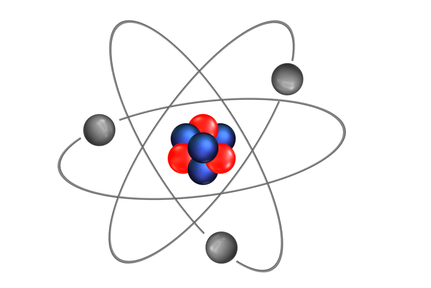
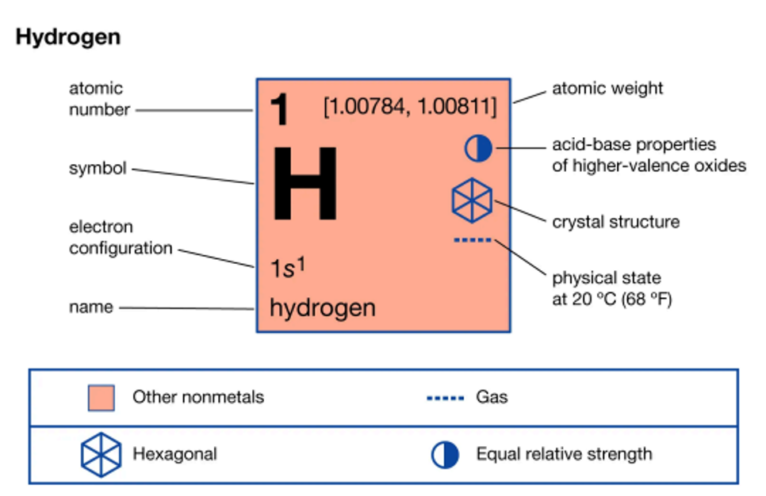
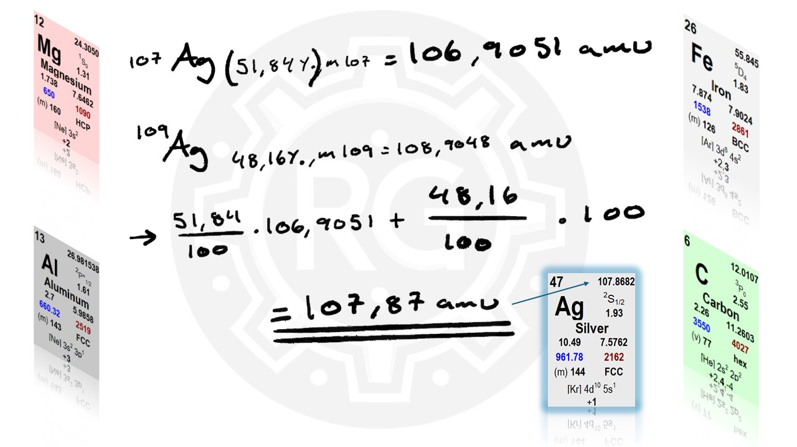
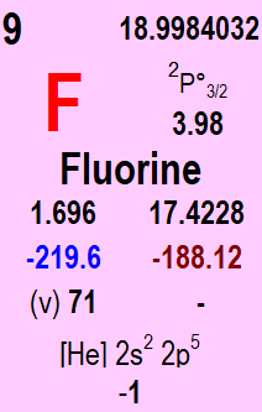
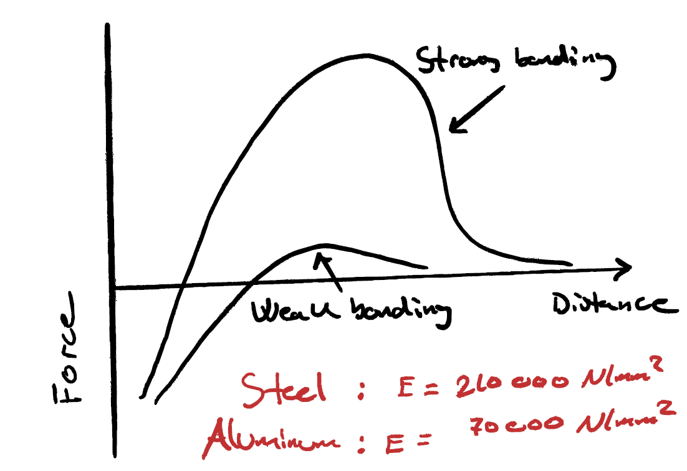

Chemistry for Materials Engineering
What is an atom?

In this section, we will go through some fundamental chemistry concepts. This forms the foundation for material theory and helps explain why materials have the properties they do. To understand this, we first need to grasp some basic chemistry. We will start at the smallest scale—atoms—and gradually build up our understanding, exploring how everything is connected. We will examine how atoms bond together and how this ultimately influences the properties of a material. If you have taken chemistry in high school, some of this will be familiar to you. For those without prior chemistry knowledge, this will be an exciting introduction to new concepts. The Importance of Atomic Bonding in Materials Science The primary relevance of this topic to materials science is that atomic bonds, which we will soon explore, help explain chemical compounds—how different substances are held together by bonding forces between atoms. As we move into the next chapter, we will examine a concept called lattice structure, which is particularly relevant for metallic materials. This structure is explained using atomic bonding principles. The lattice structure, in turn, is a part of what we call the microstructure of a material. As we will see, a material’s properties can be explained by its lattice or microstructure, which, in turn, can be understood based on the chemical bonding between the atoms that make up the material. This introduces a bottom-up approach, which we will follow initially. We will start at the smallest scale and systematically build our understanding upwards. Introduction to Atoms and Their Structure Let's begin by discussing what atoms are and how they are structured. In the context of materials science, we can consider atoms as the smallest units of matter that make up all materials. While atoms themselves are composed of even smaller particles, for the purposes of this course, we will not go into details about quarks and other subatomic particles, as they do not directly influence material properties. Historically, the concept of atoms was first introduced by the ancient Greek philosopher Democritus around 400 BCE. He hypothesized that all matter could be divided until reaching an indivisible fundamental unit, which he called the atom. However, the physical existence of atoms was not confirmed until the early 20th century, thanks to the work of Albert Einstein.
Structure of an Atom
Today, we understand that an atom has a size of approximately 0.1 nm. It consists of a nucleus, which contains protons and neutrons, and is surrounded by electrons that move in orbitals around the nucleus. Protons have a positive charge, neutrons have no charge (neutral) and electrons have a negative charge. The charge of a proton and an electron are equal in magnitude but opposite in sign. While the number of protons in an atom remains fixed, the number of electrons can change. This means atoms can gain or lose electrons when they interact with other atoms. If an atom gains electrons, it will have more negative charges than positive, making it a negatively charged ion. If an atom loses electrons, it will have fewer negative charges than positive, making it a positively charged ion. Any atom that has a positive or negative charge is called an ion.
Atomic Number and Elements
The number of protons in the nucleus determines the identity of an atom and what type of element it belongs to. This number is called the atomic number. A pure element consists of atoms that all have the same number of protons in their nucleus. This means that within an element, all atoms share the same atomic number.Are you familiar with any chemical elements?
For example:
How Many Elements Exist?
Does anyone know how many elements exist today? 118! All substances we know are made up of one or more of these 118 elements. Out of these, approximately 90 occur naturally, while the remaining ones have been synthesized in laboratories by fusing atomic nuclei. Each of these elements is organized within the periodic table of elements.

Understanding an Element's Representation in the Periodic Table
Let’s take a closer look at how elements are represented in the periodic table, using hydrogen (H) as an example. In the periodic table, the element hydrogen is labeled with the number 1. The number 1 represents the atomic number, which is the identity of the element. This means that hydrogen has 1 proton in its nucleus. Below the element symbol (H), you will see another number, 1.0079. This represents the atomic mass or weight of the atom. However, this mass is not measured in kilograms, but rather in a unit called atomic mass units (amu). Understanding these numbers is essential, as they provide key information about the properties of elements.
Atomic Mass and Isotopes
1 atomic mass unit (amu) is approximately 1.66 × 10⁻²⁷ kg. This is roughly equal to the mass of a proton and also approximately the mass of a neutron. Since kilograms are impractically small for atomic measurements, amu was introduced as a more suitable unit.Mass of Subatomic Particles
Isotopes
The number of neutrons in an element can vary, forming isotopes of that element.For example, carbon (C) can have:
Calculating Atomic Mass
The atomic mass of an element is defined as the weighted average of the atomic masses of its naturally occurring isotopes. For example, silver (Ag) (from the Latin argentum) has two main isotopes:
Thus, the atomic mass of silver is 107.87 amu.
Electrons and Chemical Bonding
When studying chemical bonds, the most important aspect to consider is what happens to the electrons. Electrons are the key to determining the chemical properties of an element. Although we have discussed protons and neutrons in the atomic nucleus, it is electrons that actively participate when atoms bond with each other. To understand how atoms bond, we must first examine how electrons are distributed in an atom. Electron Shells and the Shell Model Electrons do not move randomly around the nucleus but are instead organized into shells. The shell model, developed by Niels Bohr, is a widely used way to visualize how electrons are arranged. The innermost shell can hold only 2 electrons. The next shell can hold up to 8 electrons. Higher energy shells can hold 18, 32, and so on, but the outermost shell never contains more than 8 electrons, regardless of the atomic number.Electron Configuration and the Periodic Table
The way electrons are arranged in shells is what determines the position of elements in the periodic table.For example:
Group 1 elements (far left) have 1 electron in their outermost shell. • Group 2 elements have 2 electrons in their outermost shell. • Group 18 elements (far right, noble gases) always have 8 electrons in their outermost shell (except helium, which has only 2). Examples of Electron Shells • Hydrogen (H, atomic number 1): o Has 1 proton in the nucleus and 1 electron in orbit. • Helium (He, atomic number 2): o Has 2 protons in the nucleus and 2 electrons, both fitting in the first shell (since it holds up to 2 electrons). • Lithium (Li, atomic number 3): o Has 3 protons and needs 3 electrons to be neutral. o 2 electrons fill the first shell, but the third electron moves to the second shell, as the first shell is already full.
Understanding electron distribution helps explain why elements react in specific ways and how they form chemical bonds. Electron Shells and the Periodic Table • The first row of the periodic table contains only two elements: Hydrogen (H) and Helium (He). o These elements have only one electron shell. o When a new electron shell is needed, we start a new row in the periodic table. • Neon (Ne, atomic number 10) has 2 electrons in the first shell and 8 in the second shell, which is full. o This means we start a new shell, leading to a new row in the periodic table. • Sodium (Na, atomic number 11) starts this new row, as it has one electron in a new shell. • The third shell can hold up to 18 electrons, but elements in Group 18 (noble gases, such as Argon, Ar) only have 8 electrons in their outermost shell. o This follows the rule that no more than 8 electrons exist in the outermost shell. • Calcium (Ca, atomic number 20), in row 4, places its electrons into a fourth shell. o However, for Scandium (Sc, atomic number 21) and beyond, electrons also begin to fill the third shell again, allowing for 18 electrons in that shell. Patterns in the Periodic Table • All elements in Group 1 (first column) have 1 valence electron. • All elements in Group 2 have 2 valence electrons. • In Groups 3-12, electron distribution is more irregular. • In Group 13, all elements have 3 valence electrons, and this pattern continues until Group 18, where all elements (except Helium) have 8 valence electrons. Valence Electrons and Chemical Bonding • The outermost electrons are called valence electrons. • When chemical bonds form, atoms exchange, donate, or share valence electrons. The Octet Rule • The Octet Rule states that atoms are most stable when their outermost electron shell is full. • Only noble gases (Group 18) naturally have a full outer shell, which makes them chemically unreactive. • Elements in the same group have the same number of valence electrons, leading to similar chemical properties. In the next section, we will explore how atoms combine to form chemical compounds. What is a Chemical Compound? A chemical compound is a substance made up of two or more elements combined in a specific ratio. • Compounds are represented by chemical formulas, which indicate the number of atoms of each element in the compound. Common Chemical Compounds Can you think of some chemical compounds you encounter frequently? Here are a few examples: • Water (H₂O) • Table salt (NaCl) • Carbon dioxide (CO₂) • Ammonia (NH₃) When no number appears after an element symbol, it means there is only one atom of that element in the compound. • Water (H₂O) contains two hydrogen atoms and one oxygen atom. • Ammonia (NH₃) contains one nitrogen atom and three hydrogen atoms. Types of Chemical Compounds Chemical compounds are classified into two main types: 1. Ionic compounds (e.g., table salt, NaCl) 2. Molecular compounds (e.g., water, H₂O and ammonia, NH₃) The types of elements involved and their valence electrons determine which type of chemical bonding occurs. In the next section, we will explore how atoms bond together to form these compounds.

"Before we continue, I just want to highlight something important: We often use the term molecular compounds to describe substances that exist as molecules at room temperature. So, what exactly is a molecule? • A molecule is a particle made up of a specific group of atoms in a fixed ratio. • Examples include carbon dioxide (CO₂), oxygen (O₂), and water (H₂O). Now, what’s special about molecular compounds? • They typically have low melting and boiling points. • This means that at room temperature, they are often found as gases or liquids rather than solids." In our exploration of chemical bonds, we have already discussed ionic and covalent bonds. Now, we turn our attention to a third type—metallic bonding—which is especially important in our study of metals. What Is Metallic Bonding? Metallic bonding is the force that holds metal atoms together in a solid. Unlike ionic bonding, where electrons are completely transferred from one atom to another, or covalent bonding, where electrons are shared between specific atoms, metallic bonding features a very different mechanism: • Delocalized Electrons: In metals, the outermost electrons are only loosely bound to their parent atoms. These electrons are free to move throughout the entire structure, creating what is often referred to as a "sea of electrons." • Crystal Lattice Structure: Although the metal atoms occupy fixed positions in a well-organized, three-dimensional lattice, their loosely held electrons move freely around them. This unique arrangement underlies many of the characteristic properties of metals. How Metallic Bonding Influences Metal Properties The nature of metallic bonding has a direct impact on several key properties of metals: 1. Electrical Conductivity Because the valence electrons in metals are not attached to any specific atom, they can move easily under an applied electric field. This mobility of electrons is what makes metals excellent conductors of electricity. 2. Malleability and Ductility In contrast to ionic compounds, where the directional forces between ions result in a brittle structure, the uniform distribution of the bonding forces in metals allows atoms to slide past one another. This results in: • Malleability: Metals can be hammered or rolled into thin sheets. • Ductility: Metals can be drawn into wires. 3. Variable Melting Points The strength of the metallic bond can vary significantly from one metal to another. For instance, mercury is liquid at room temperature due to very weak bonding, whereas tungsten has an extremely high melting point because of its strong metallic bonds. The Role of Metallic Bonding in Materials Science A solid understanding of metallic bonding is crucial for grasping the behavior and properties of metals. The concept not only explains why metals are such good electrical conductors and are highly deformable, but it also helps us predict how different metals will respond under various conditions—be it during mechanical stress or changes in temperature. As we continue our journey into materials science, metallic bonding will serve as a fundamental concept that connects microscopic atomic interactions with the macroscopic properties observed in everyday metal objects. Primary and Secondary Bonds in Materials Science Primary Bonds: The Foundation of Molecular and Crystal Structures So far, we have explored primary bonds, which are the strong interactions that hold atoms together within a molecule or a crystal structure. These include: • Ionic Bonds – Formed through the transfer of electrons. • Covalent Bonds – Formed through the sharing of electrons. • Metallic Bonds – A "sea of electrons" holds metal atoms together. Introducing Secondary Bonds Now, we shift our focus to secondary bonds—a different type of interaction that occurs between molecules, rather than between individual atoms. Unlike primary bonds, secondary bonds are typically weaker, but they play a crucial role in determining material properties, such as melting and boiling points, viscosity, and structural integrity. In the next section, we will explore the different types of secondary bonds and their significance in materials science. Blended Chemical Bonds: The Overlapping Nature of Bonding No Clear Boundaries Between Bond Types In many cases, chemical bonds do not fall neatly into one specific category. Instead, they exist somewhere between different bonding types, forming hybrid characteristics of multiple bonding mechanisms. For example, there is no strict dividing line between ionic bonds and covalent bonds—they exist on a spectrum rather than as separate entities. How Do We Define When a Bond is Ionic or Covalent? To help classify bonds, chemists have established a general guideline based on electronegativity differences: • If the electronegativity difference between two bonded atoms is greater than 2.0, the bond is considered ionic. • If the electronegativity difference is less than 2.0, the bond is classified as covalent. However, in real-world materials, bonding does not always fit perfectly into these categories. Gradual Transition Between Bonding Types Rather than being strictly one type or another, bonds can exhibit a mix of characteristics from multiple bond types, creating: • Covalent-Ionic Bonds – Found in compounds with polar covalent bonding, where electrons are unequally shared but not fully transferred. • Metallic-Covalent Bonds – Seen in semi-metals (metalloids), where electrons are partially shared but still exhibit metal-like conductivity. • Metallic-Ionic Bonds – Found in certain metal alloys and complex compounds, where there is a mix of electron delocalization and charge transfer. Examples in Real Materials • Semimetals (e.g., silicon, germanium) often exhibit both metallic and covalent bonding, giving them unique semiconductor properties. • Transition metal compounds may have a mix of ionic and covalent bonding, influencing their electrical and thermal conductivity. Conclusion The reality of chemical bonding is far more complex than simple definitions suggest. While ionic, covalent, and metallic bonds provide a useful framework, in practice, most materials contain a combination of these bonding types. Understanding these blended bonding characteristics is crucial in materials science, particularly when designing new materials for electronics, structural engineering, and advanced manufacturing. Bonding Energy: Understanding the Strength of Atomic Bonds What is Bonding Energy? Bonding energy is a measure of how strong a chemical bond is between two atoms. The definition of bonding energy is: The amount of energy required to break a bond between two atoms and separate them completely. How Can We Visualize Bonding Energy? One way to understand atomic bonding is to imagine atoms as small spheres and bonds as elastic springs connecting them. • In physics, when we stretch a spring, it resists being pulled apart because it wants to return to its original length. • Similarly, when atoms move apart, they experience an attractive force pulling them back to their equilibrium distance. • If we try to push the atoms too close together, they repel each other, just like compressed springs push back when squeezed. This behavior of atoms is well described using potential energy curves. The Energy vs. Distance Curve In the bonding energy curve, energy is plotted as a function of atomic separation distance. • The lowest point of the curve represents the equilibrium bond distance—this is the distance where atoms are most stable. • As we pull atoms apart, the attractive force increases at first, but then weakens beyond a certain point. • Conversely, if we push atoms closer together, a strong repulsive force pushes them apart. Why is Bonding Energy Important? Bonding energy is crucial in materials science because it helps explain: ✅ Material Strength – Stronger bonds mean tougher materials. ✅ Melting & Boiling Points – High bonding energy leads to high melting points. ✅ Chemical Reactivity – Weakly bonded atoms react more easily. By understanding bonding energy, we gain deeper insights into how materials behave under stress, heat, and external forces.
